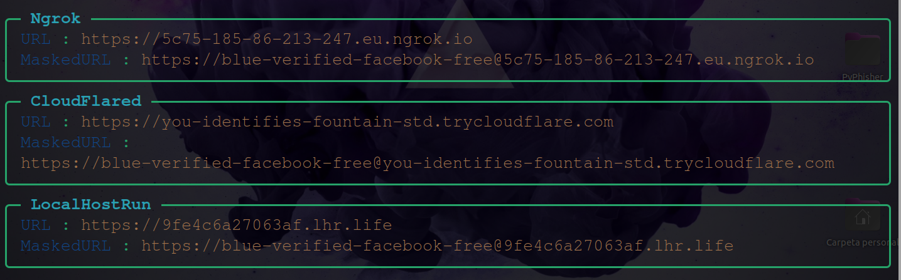

La ciberseguridad
Los ciberataques están a la orden del día, cada año surgen nuevos ataques y el número atacantes aumenta debido
a que cada vez la información es más accesible para todo el mundo y no solo eso sino que también existen programas
que facilitan mucho a los novatos hacer ataques potentes. Me estoy refiriendo concretamente a los exploits, programas creados
por autenticos hackers que puden vulnerar agujeros de seguridad en el sistema o engañar a las personas a través de ataques de ingeniería social.
Uno de los ataques de ingeniería social más comunes y con mayor tasa de éxito son los phishing, páginas webs fraudulentas que intentan aparentar
creibles y con una apariencia muy semejante a las páginas webs oficiales. Ahora voy a hacer una demostración de como un novato como yo en la ciberseguridad
es capaz de hacer una página web fraudulenta en internet.
Si quieres seguirme en el tutorial te advierto que estoy utilizando Ubuntus, si no sabes como instalarte ubuntus te recomiendo que veas el tutorial de como instalar
una máquina virtual en windows, ahí te explico como virtualizar una máquina e instalarte ubuntus de manera fácil y sencilla.
Para empezar con el tutorial debemos saber como utilizar git, git es una herramienta importante que nos permite crear instantáneas de nuestras carpetas en varias líneas del tiempo, pero bueno ahora solo voy a explicar lo básico que hay que saber para el tutorial, que sería saber como podemos clonar un repositorio de Github. Para instalar git simplemente ponemos en la terminal sudo apt install git.
Github es una plataforma gratuita para almacenamiento de código donde cualquier desarroyador puede publicar sus programas. Estos programas se almacenan en repositorios, que básicamente son carpetas en la nube donde se guardan los archivos del programa. Y bien para clonar un repositorio debemos irnos al perfil, buscar el repositor y darle a copy link. El programa que voy a estar utilizando se llama PyPhisher , por el nombre ya podemos intuir que está escrito en python. El programa tiene ya una serie de plantillas html preinstaladas, lo único que debemos hacer es indicarle la plantilla, y ya este se encarga de hacer el resto para que nuestra página pueda ser visible desde Internet.
Con el link copiado del repositorio tenemos que poner git clone "y el enlace del repositorio". Tenemos que saber que cuando clanamos el repositorio la carpeta se almacena en el direcotior actual donde nos encontremos, por eso yo voy a situarme en el Escritorio.
Una vez que tenemos el repositorio en local simplemente seguimos las instrucciones de su instalación que nos viene en la propia página web.
1º Instalamos sus dependencias.
2º Nos metemos en la carpeta e instalamos los requerimientos necesarios con el siguiente comando, pip3 install -r files/requirements.txt
Si te sale el mensaje de error como a mí simplemente seguimos el consejo que nos pone abajo e instalamos la que nos sugiere herramienta.
Preguntará si deseamos continuar, le damos a la S para confirmar. Una vez instalado volvemos a ejecutar el comando anterior para instalar las dependecias.
3º Ejecutamos el programa
Luego nos preguntará si tenemos un token de ngrok, simplemento le damos a la n indicandole que no y enter, lo mismo con los demás
Nos mostrará todas las plantillas que tenemos a disposición para hacer el phishing, yo cogeré el 1 para la demostración, será la página Login de Facebook. Si conseguimos convecer a la víctima a que se registre pensando que está en facebook podremos ver en texto plano su contraseña.
Luego nos hará una pregunta, le damos a que no y enter, en la siguiente opción simplemente le damos al enter.
Ahora nos pedirá una url de redirección, esta opción nos permite que cuando la víctima escriba sus credenciales y le de al enter la página lo redireccione a la págian ofcial de Facebook, de esta manera pensará que a escrito mal la contraseña y simplemente volverá a escribirlo pero ya en la página oficial de Facebook, de esta manera no sospechará nada.
Una vez hecho todo esto nos mostrará todas la url que tenemos a nuestra disposición, no todas funcionan, por ejemplo en mi caso la ngrok no me va pero la otra resto sí.
Con la siguiente opción podremos "maquillar" nuestra url a primera vista, es decir podemos hacer una url que se llame facebook.com-login y cuando pinche en el enlace le redireccione a nuestra página web. Si no queremos hacer este paso podemos simplemente darle al enter y entonces estaremos a la escucha hasta que la víctima nos proporcione las credenciales.

Ahora si quieremos hacer la prueba podemos acceder a la url custom y probar a ver si funciona

Cuando la víctima le de a enviar nos aparecerá en la terminal sus credenciales así como su ip, el sistema operativo que ha utilizado, el tipo de navegador etc
He de decir que esta práctica la hago solo con fines eductivos para enseñar los riesgos a los que estamos expuestos, no se debe poner en práctica en ningún caso porque podéis meteros en serios problemas.
Como detectar este tipo de ataques
En apariencia es muy dificil que tedes cuenta sin embargo lo que podemos hacer es revisar siempre la url a la que estamos accediendo, normalmete las url oficiales se ven claramente al principio y tienen una longitud corta.
Otra forma de detectaro es revisando el certificado digital de la siguiente manera